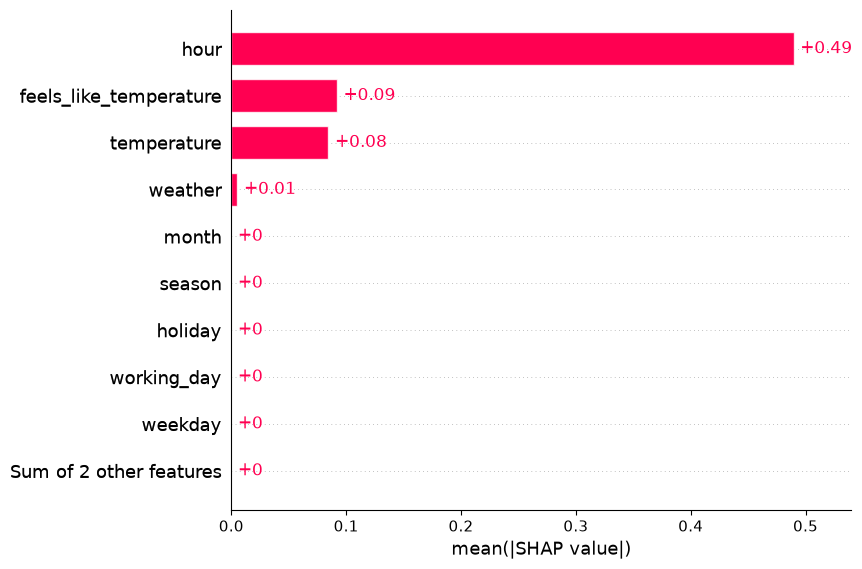

Task recipes¶
When ReportingConfig.psi=True, every model saved by the existing tracking
flags includes its fitted PSI baseline. ReportingConfig.on_* switches govern
report generation; they do not disable this model attachment. features=()
disables levels and baseline packaging. No additional tracking flag is needed.
See PSI baseline loading.
Choose the model, primary metric and reports for your target, then pass them to
train_model. The short recipes share the setup below. A
complete Frequency example spells out selection,
tuning, reporting and model packaging without requiring that setup.
Choose a recipe¶
| Task | Model | Primary metric |
|---|---|---|
| Binary classification | CatBoostClassificationModel |
metrics_classification |
| Regression | CatBoostRegressionModel |
metrics_regression |
| Frequency | CatBoostLogLinkRegressionModel |
metrics_frequency |
| Severity | CatBoostLogLinkRegressionModel |
Tweedie deviance with fixed power |
| Positive–unlabeled | CatBoostPUClassificationModel |
PUMetric with a population prior |
Prepare source data¶
From an installed repository checkout, run python -m examples.prepare_data
once. The examples read cached sources and do not download data implicitly.
| Source | Target | Partition |
|---|---|---|
| UCI Bike Sharing, 17,379 recorded hours | Rentals/hour, or high demand for binary classification | Three chronological folds and the latest 20% as test |
| UCI Online Retail, fixed 10% invoice sample | Positive unit price in GBP/item | Train before September 2011, validate in September, test from October |
| Your PU project | Known positives and unlabeled observations | Recorded project timestamps and an independently justified prior |
See the Bike setup and retail setup for features, units and sampling. The PU recipe is a function requiring your own pool.
Shared setup¶
Run this block, choose one short task recipe, then use Run the chosen recipe. Set the MLflow tracking URI and experiment before training. Compact recipes disable model packaging and leave selection and tuning off; PSI, prediction evaluators and data analyzers still write reports.
from ml_toolkit.training import Holdout, TimeSeriesCV
from dataclasses import replace
from ml_toolkit.config import (
FeatureLevelConfig,
ReportingConfig,
TrackingConfig,
TrainingConfig,
)
from ml_toolkit.metrics import (
MetricsSeverity,
PUMetric,
metrics_classification,
metrics_frequency,
metrics_severity,
)
from ml_toolkit.models import (
CatBoostClassificationModel,
CatBoostLogLinkRegressionModel,
CatBoostPUClassificationModel,
CatBoostRegressionModel,
)
from ml_toolkit.types import FloatArray
base_config = TrainingConfig(tracking=TrackingConfig(log_test_model=False, log_final_model=False))
base_params = {
"iterations": 20,
"depth": 2,
"random_seed": 42,
"thread_count": 2,
"verbose": False,
"allow_writing_files": False,
}
common = ReportingConfig(psi=True)
Binary classification¶
The example labels an observed hour as high demand when its recorded rental count is at least 100. This fixed operational threshold is chosen before splitting; the count and its components are excluded from features. Include both classes in evaluated splits for finite ROC AUC; single-class splits return NaN.
from ml_toolkit.data_analysis import NumericalFeatureDistributions
from ml_toolkit.evaluation import (
PrecisionRecall,
F1Threshold,
Calibration,
Gains,
Lift,
ObservedFitted,
TimeObservedFitted,
)
from examples.gallery_data import load_bike_pool
import polars as pl
data = load_bike_pool(download_if_missing=False)
data = data.with_target((data.y >= 100).cast(pl.Float64))
classification_config = replace(base_config, reporting=common)
splitter = TimeSeriesCV(data, n_splits=3, test_size=0.2)
config = classification_config
model_factory = CatBoostClassificationModel
params = {**base_params, "loss_function": "Logloss"}
metric = metrics_classification
feature_selector = None
param_space = None
prediction_evaluators = [
PrecisionRecall(),
F1Threshold(),
Calibration(),
Gains(),
Lift(),
ObservedFitted(),
TimeObservedFitted(),
]
data_analyzers = [NumericalFeatureDistributions()]
Regression¶
Ordinary regression supports signed targets. metrics_regression returns
weighted MAE, MSE, RMSE, R² and mean error (prediction minus target).
from ml_toolkit.data_analysis import NumericalFeatureDistributions
from ml_toolkit.evaluation import (
ObservedFitted,
TimeObservedFitted,
)
from examples.gallery_data import load_bike_pool
data = load_bike_pool(download_if_missing=False)
from ml_toolkit.metrics import metrics_regression
regression_config = replace(base_config, reporting=common)
splitter = TimeSeriesCV(data, n_splits=3, test_size=0.2)
config = regression_config
model_factory = CatBoostRegressionModel
params = {**base_params, "loss_function": "RMSE"}
metric = metrics_regression
feature_selector = None
param_space = None
prediction_evaluators = [
ObservedFitted(),
TimeObservedFitted(),
]
data_analyzers = [NumericalFeatureDistributions()]
Severity¶
Use the recorded positive retail unit prices as monetary targets, with
stock_code, country and quantity as inputs. The test starts on 1 October
2011; the holdout uses September for validation and earlier invoices for
training. The validation row count comes from the canonical calendar split,
so whole invoices stay together. Feature diagnostics use quantity.
Use a Tweedie power consistent with the model loss and metric. Here power=1.5
allows zero targets and requires positive predictions and positive weighted
observed totals. Gamma deviance (power=2) requires strictly positive targets.
For strictly positive severity, set loss_function="Gamma" on the same
CatBoostLogLinkRegressionModel and set the reporting metric's power=2.0.
See Gamma regression for CPU/GPU configuration,
predictions, validation requirements and saving models.
from ml_toolkit.data_analysis import NumericalFeatureDistributions
from ml_toolkit.evaluation import (
Gains,
Lift,
ObservedFitted,
TimeObservedFitted,
)
from examples.retail_data import load_retail_pool, load_retail_splits
data = load_retail_pool(download_if_missing=False)
retail_splits = load_retail_splits(download_if_missing=False)
def severity_metric(
observed: FloatArray, prediction: FloatArray, weight: FloatArray
) -> MetricsSeverity:
return metrics_severity(observed, prediction, weight, power=1.5)
severity_config = replace(
base_config,
reporting=replace(
common, features=(FeatureLevelConfig("quantity", "numerical"),)
),
)
splitter = Holdout(
data, val_size=len(retail_splits.validation), test_size="2011-10-01"
)
config = severity_config
model_factory = CatBoostLogLinkRegressionModel
params = {**base_params, "loss_function": "Tweedie:variance_power=1.5"}
metric = severity_metric
feature_selector = None
param_space = None
prediction_evaluators = [
Gains(),
Lift(),
ObservedFitted(),
TimeObservedFitted(),
]
data_analyzers = [NumericalFeatureDistributions()]
Positive–unlabeled classification¶
Use 1 for known positives and 0 for unlabeled observations. Both groups
need positive weight in training and evaluated samples. prior is the positive
fraction in the population, not the fraction of labeled rows. Supply a prepared
project Pool and call train_pu(data, prior=your_prior) after setting up MLflow.
The function uses the same prior in the model and metric.
from ml_toolkit import Pool, TrainingResult, train_model
from ml_toolkit.evaluation import PUScoreDistribution, PUPositiveCapture
def train_pu(data: Pool, *, prior: float) -> TrainingResult:
return train_model(
splitter=TimeSeriesCV(data, n_splits=3, test_size=0.2),
params={**base_params, "loss": "uPU", "pu_prior": prior},
model_factory=CatBoostPUClassificationModel,
metric=PUMetric(prior, loss="uPU"),
run_name="project-pu",
config=replace(base_config, reporting=common),
prediction_evaluators=[PUScoreDistribution(), PUPositiveCapture()],
)
The PU report guide explains what the two plots show.
Frequency¶
Use nonnegative targets with a positive weighted total in every evaluated split. The log-link adapter fits a training-only baseline and returns positive rates.
from ml_toolkit.data_analysis import NumericalFeatureDistributions
from ml_toolkit.evaluation import (
Gains,
Lift,
ObservedFitted,
TimeObservedFitted,
)
from examples.gallery_data import load_bike_pool
data = load_bike_pool(download_if_missing=False)
frequency_config = replace(base_config, reporting=common)
splitter = TimeSeriesCV(data, n_splits=3, test_size=0.2)
config = frequency_config
model_factory = CatBoostLogLinkRegressionModel
params = {**base_params, "loss_function": "Poisson"}
metric = metrics_frequency
feature_selector = None
param_space = None
prediction_evaluators = [
Gains(),
Lift(),
ObservedFitted(),
TimeObservedFitted(),
]
data_analyzers = [NumericalFeatureDistributions()]
Run the chosen recipe¶
This call uses the variables from your chosen short recipe. Executing this
page in order uses Frequency, the final recipe above. PU uses its explicit
train_pu function instead.
import mlflow
from ml_toolkit import train_model
mlflow.set_tracking_uri("sqlite:///mlflow.db")
mlflow.set_experiment("ml-toolkit-task-recipes")
result = train_model(
splitter=splitter,
params=params,
model_factory=model_factory,
metric=metric,
run_name="task-example",
config=config,
feature_selector=feature_selector,
param_space=param_space,
prediction_evaluators=prediction_evaluators,
data_analyzers=data_analyzers,
)
print(
{
name: round(value, 4)
for name, value in result.validation.mean_metrics.items()
}
)
assert result.test_metrics is not None
print({name: round(value, 4) for name, value in result.test_metrics.items()})
{'mean_absolute_error': 111.9625, 'mean_squared_error': 26246.4224, 'root_mean_squared_error': 155.9688, 'r2_score': 0.1234, 'mean_error': -56.8402, 'mean_poisson_deviance': 120.7394, 'd2_poisson_score': 0.1843, 'prediction_over_observed': 0.7438, 'lift_at_10': 1.6123, 'gain_at_10': 0.1612, 'normalized_gini': 0.6381}
{'mean_absolute_error': 144.2219, 'mean_squared_error': 42249.5587, 'root_mean_squared_error': 205.547, 'r2_score': 0.1309, 'mean_error': -75.6556, 'mean_poisson_deviance': 159.3838, 'd2_poisson_score': 0.1984, 'prediction_over_observed': 0.6959, 'lift_at_10': 1.7831, 'gain_at_10': 0.1783, 'normalized_gini': 0.7351}
The two dictionaries contain validation averages and independent test scores. Metrics, configuration and evaluator artifacts are written to a local MLflow store. See workflow results and Tracking to inspect a run.
Complete Frequency example¶
This standalone configuration enables RFE, two Optuna trials per fold, PSI,
SHAP, the listed evaluators and main-model packaging. Install the shap extra.
The small budgets keep the demonstration reproducible; choose production budgets
for your own task. RFE's min_features is a lower bound, not a promised result.
from ml_toolkit.training import TimeSeriesCV
from ml_toolkit.data_analysis import NumericalFeatureDistributions
from ml_toolkit.evaluation import (
Gains,
Lift,
ObservedFitted,
TimeObservedFitted,
)
from examples.gallery_data import load_bike_pool
data = load_bike_pool(download_if_missing=False)
from optuna import Trial
from ml_toolkit.config import (
FigureConfig,
ReportingConfig,
ShapConfig,
TrackingConfig,
TrainingConfig,
TuningConfig,
)
from ml_toolkit.feature_selection import RFESelector
from ml_toolkit.metrics import metrics_frequency
from ml_toolkit.models import CatBoostLogLinkRegressionModel
from ml_toolkit.training import importance_ranker
from ml_toolkit.types import ModelParams
frequency_config = TrainingConfig(
tuning=TuningConfig(
metric="mean_poisson_deviance",
direction="minimize",
n_trials=2,
timeout_seconds=None,
seed=42,
),
reporting=ReportingConfig(
figure=FigureConfig(figsize=None, dpi=150, format="png"),
features=None,
psi=True,
period="month",
n_bins=10,
epsilon=1e-06,
shap=ShapConfig(
max_samples=500, seed=42, max_display=10, dependence_features=()
),
),
tracking=TrackingConfig(
log_trial_models=False,
log_validation_models=False,
log_test_model=True,
log_final_model=True,
input_example_rows=5,
model_name="model",
registered_model_name=None,
conda_env=None,
),
)
splitter = TimeSeriesCV(
data,
n_splits=3,
val_size=None,
test_size=0.2,
gap=0,
max_train_size=None,
skip_splits=0,
)
config = frequency_config
model_factory = CatBoostLogLinkRegressionModel
params = {
"iterations": 20,
"depth": 2,
"random_seed": 42,
"thread_count": 2,
"verbose": False,
"allow_writing_files": False,
"loss_function": "Poisson",
}
metric = metrics_frequency
feature_selector = RFESelector(
min_features=1,
metric="mean_poisson_deviance",
direction="minimize",
ranker=importance_ranker,
max_fits=2,
score_tolerance=0.0,
protected_features=(),
)
def param_space(trial: Trial) -> ModelParams:
return {
"depth": trial.suggest_int("depth", 1, 3),
"learning_rate": trial.suggest_float(
"learning_rate", 0.03, 0.1, log=True
),
}
prediction_evaluators = [
Gains(),
Lift(),
ObservedFitted(),
TimeObservedFitted(),
]
data_analyzers = [NumericalFeatureDistributions()]
Inspect the complete run¶
Run the complete Frequency block immediately above, then this example. It prints the selected settings and independent test metric, and renders SHAP importance from at most 500 test rows. Contributions are in the native raw log-rate units.
from pathlib import Path
import mlflow
from ml_toolkit import train_model
from ml_toolkit.explainability import calculate_shap_values
from ml_toolkit.plots.explainability import shap_importance
mlflow.set_tracking_uri("sqlite:///mlflow.db")
mlflow.set_experiment("ml-toolkit-task-recipes")
result = train_model(
splitter=splitter,
params=params,
model_factory=model_factory,
metric=metric,
run_name="frequency-full-example",
config=config,
feature_selector=feature_selector,
param_space=param_space,
prediction_evaluators=prediction_evaluators,
data_analyzers=data_analyzers,
)
assert result.feature_selection is not None
assert result.tuning is not None
assert result.test_metrics is not None
print("Selected features:", result.features)
print(
"Visited subset sizes:",
[len(step.features) for step in result.feature_selection.steps],
)
print("Best trial:", result.tuning.best_trial)
print(
"Test Poisson deviance:",
round(result.test_metrics["mean_poisson_deviance"], 4),
)
test = splitter.get_test().heldout
assert test is not None
selected_test = test.select_features(result.features)
shap_config = config.reporting.shap
explanation = calculate_shap_values(
result.model.native_model, selected_test.X, config=shap_config
)
shap_importance(
explanation, Path("frequency-full-shap.png"), config=shap_config
)
Selected features: ('temperature', 'feels_like_temperature', 'humidity', 'wind_speed', 'hour', 'working_day', 'weekday', 'holiday', 'season', 'weather', 'month')
Visited subset sizes: [11, 1]
Best trial: 0
Test Poisson deviance: 114.3487

steps includes every subset tried in the last fold; the winning subset can
contain more than min_features. best_trial is zero-based. The main model
reuses the last fold's selected settings. Its packaged form preserves the
prediction behavior shown in the Models guide.
Find fold results, tuning trials, configuration and reports in the MLflow run hierarchy. See feature selection, parameter tuning and SHAP for independent usage and customization.